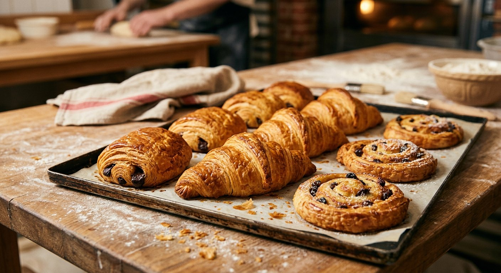

La miche au levain
24 h de fermentation lente, croûte épaisse et caramélisée, mie souple au parfum de noisette. Se garde cinq jours.
5,20 € le kiloLevain naturel entretenu depuis trente ans, farines de meule du Vaucluse, four à sole chauffé au feu de bois. Et cette odeur de croûte chaude qui vous attend dès 6 h 30.
🥖 Ouvert du mardi au dimanche · Fermé le lundiNotre levain-chef est rafraîchi deux fois par jour depuis 1987. C’est lui qui donne la mie alvéolée et la conservation de nos pains.
Des moulins de Provence, moulues lentement sur pierre pour garder le germe : plus de goût, plus de nutriments, zéro additif.
Pétrissage, façonnage et cuisson se font dans notre fournil, derrière la boutique. Trois fournées par jour, jamais de pâte surgelée.
Ce que nos habitués réclament, saison après saison.
24 h de fermentation lente, croûte épaisse et caramélisée, mie souple au parfum de noisette. Se garde cinq jours.
5,20 € le kilo
Croissants, pains au chocolat et chaussons tourés à la main avec du beurre de baratte AOP Charentes-Poitou.
1,30 € le croissant
Quelle mie pour quel fromage, comment rassir un pain sans le perdre, quelle fougasse pour l’apéritif : on vous dit tout.
Toujours gratuit
En 1987, Jean et Martine reprennent un petit fournil du centre-ville avec un seul four et une idée simple : faire du pain qu’on a envie de manger tous les jours. Leur fils Karim a pris la relève en 2014, avec la même recette de levain et un four à bois neuf.
24, avenue Camille Pelletan
13500 Martigues
04 42 80 12 34
bonjour@lafourneemartegale.fr
Parking gratuit à 80 m, arrêt de bus « Mairie » à 2 min à pied. Entrée de plain-pied, accessible en fauteuil.
« Le meilleur levain de Martigues, et de loin. La miche tient une semaine et le croissant du dimanche est devenu un rituel. »
« Fougasse aux olives commandée pour 40 personnes, prête à l’heure, encore tiède. Ils ont même ajouté deux baguettes. »
« Mon fils y va chercher le pain le samedi matin. Ils connaissent son prénom et glissent toujours un sourire avec la monnaie. »
La première fournée sort à 6 h 30. Pour les grosses commandes, prévenez-nous la veille : on vous garde le croustillant.
Commander ou nous écrire